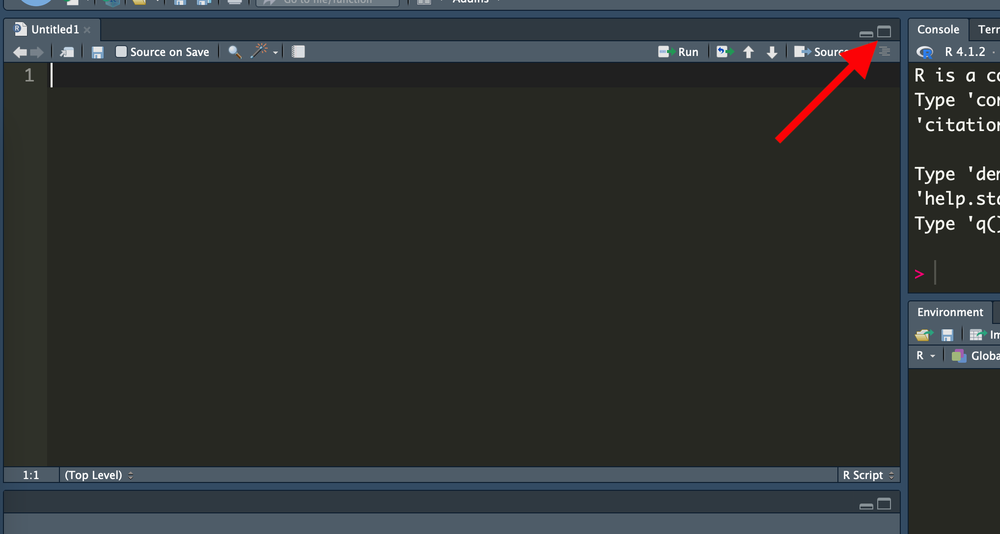

第3回講義資料
Rの基本的な操作
スライド
電卓としてのR
手順1: File > New File > R Scriptをクリックする。
手順2: Sourceペインのペイン最大化ポタンをクリックし、Sourceペインの大きさ最大化する。

手順3: Sourceペインに以下の内容を入力する。
1 + 1手順4: コードの行にカーソルをおいたままCmd + Return（Windowsの場合、Control (Ctrl) + Enter）を入力する。これはカーソルが位置する行のコードを実行するコマンドである。
カーソルって…?
カーソル (cursor)とは文字の入力位置を意味する。RStudioのテーマによって色は異なるが、Sourceペイン、またはConsoleペインなど、何らかの文字が入力できる箇所において点滅する「|」がカーソルです。
手順5: Consoleペインに結果が表示される。
[1] 2これくらいの計算はConsoleペインで直接打ち込んでも良いが、自分がこれまで書いたコードを残すという意味でSourceペインに入力することを推奨する。R Scriptを保存しておけばいつでも開いて前回のコードを再現できる。
コメント
Rのスクリプトを作成する際、何かのメモを書いておきたいケースが多々ある。コードが長くなったり、複雑になったりすると、自分が書いたコードでも意味がよく分からないケースも多く発生する。これはデータ分析のプロでも例外でなく、宋も同じである。この場合、スクリプト内にこまめにメモを書いておくと、このコードが何のためのコードかなどが素早く把握できる。
Rにおけるコメントは#を使用する。同じ行における#以降の内容は処理に影響を与えない。たとえば、以下のコードだと# 12345と12345の積は処理に影響を与えない
# 12345と12345の積
12345 * 12345[1] 152399025また、コードと同じ行にコメントを書くこともできる。
12345 * 12345 # 12345と12345の積[1] 152399025コードにこまめにコメントを書くのは意外と面倒な作業であるが、コメントに「書きすぎ」は存在しない。書けば書くほど未来の自分から感謝されるだろう。
算術演算子
算術演算子は数字と数字の間に入力し、結果として何らかの数字が返される演算子である。先ほどの+や*も算術演算子（足し算と掛け算）である。ここでは良く使う算術演算子7つを紹介する。
| 演算子 | 意味 | 例 | 結果 |
|---|---|---|---|
+ |
和 | 2 + 5 |
7 |
- |
差 | 2 - 8 |
-6 |
* |
積 | 7 * 3 |
21 |
/ |
商 | 16 / 5 |
3.2 |
^、** |
累乗（べき乗） | 2^3または2 ** 3 |
8 |
%% |
剰余 (モジュロ) | 18 %% 7 |
4 |
%/% |
整数商 | 18 %/% 7 |
2 |
例を見てみよう。
1 + 5 # 足し算[1] 63 - 10 # 引き算[1] -719 * 2 # 掛け算[1] 3813 / 7 # 割り算[1] 1.8571435^3 # 5の3乗[1] 125 これは義務ではないがないが、累乗（^）を除き、演算子の前後にはスペースを入れるのがRの流儀であり、コードが読みやすくなる。以下のコードを比べてみよう。
# 読みにくい例
(((3+5)*4)+((5%%2)+3))^2[1] 1296# 読みやすい例
(((3 + 5) * 4) + ((5 %% 2) + 3))^2[1] 1296 結果は同じだが、後者の方が読みやすいだろう。これから紹介する論理演算子でも共通する内容であるが、「累乗（^）を除き、演算子の前後にはスペースを入れる」ことを覚えておこう。ちなみにカッコ（(と)）は演算子ではないため、スペースは不要である。
論理演算子
算術演算子は結果として数値が返ってくるが、論理演算子は真（TRUE）か偽（FALSE）のいずれかの値を返す演算子である。ここではまず、大小関係を判定する論理演算子を紹介する。
| 演算子 | 意味 | 例 | 結果 |
|---|---|---|---|
x < y |
xはyより小さい |
3 < 1 |
FALSE |
x <= y |
xはyと等しいか、小さい |
2 <= 2 |
TRUE |
x > y |
xはyより大きい |
6 > 5 |
TRUE |
x >= y |
xはyと等しいか、大きい |
4 >= 5 |
FALSE |
x == y |
xとyは等しい |
(2 + 3) == (4 + 1) |
TRUE |
x != y |
xとyは等しくない |
((2 * 3) + 1) != (2 * (3 + 1)) |
TRUE |
一つ注意すべき点は「等しい」を意味する論理演算子は=でなく、==だということだ1。
3 > 2 # 3は2より大きいの?[1] TRUE5 <= 10 # 5は10と同じか小さいの?[1] TRUE2 + 3 == 1 # 2と3の和は1なの?[1] FALSE2 + 2 != 2 * 2 # 2と2の和は2と2の積と同じなの?[1] FALSE 算術演算子は一行に何回も使えるが、通常、論理演算子は一行に一つしか使えない。複数の論理演算子を使うためには、&（AND演算子）と|（OR演算子）を使う必要がある。
AND演算子&は、&を挟む左右の両側がTRUEの場合のみTRUEを返す演算子である。
(2 + 3 == 5) & (2 * 3 == 5) # TRUE and FALSEだから... FALSE![1] FALSE(2 + 3 == 5) & (2 * 3 == 6) # TRUE and TRUEだから... TRUE![1] TRUE OR演算子|は、|を挟む左右の片側、あるいは両側がTRUEの場合のみTRUEを返す論理演算子である。
(2 + 3 == 5) & (2 * 3 == 5) # TRUE or FALSEだから... TRUE![1] FALSE(2 + 3 == 5) & (2 * 3 == 6) # TRUE or TRUEだから... TRUE![1] TRUE(2 + 3 == 6) & (2 * 3 == 5) # FALSE or FALSEだから... FALSE![1] FALSE論理演算子には他にもいくつかあるが、説明は割愛する。
!: 否定演算子（TRUEならFALSE、FALSEならTRUEが返ってくる。意外と良く使う）&&:&と同じ||:|と同じxor(): 排他的論理和（xor(FALSE, TRUE)とxor(TRUE, FALSE)の場合のみTRUEが返ってくる。論理回路に興味あれば重要な演算子だが、実際に使うケースはあまりない。）
論理演算子が活躍するのはデータ加工（データハンドリング）の時である。何かの条件を指定して、その行件に合致するケースのみを抽出する場合は、これらの論理演算子の使用が必須である。
マッチング演算子:
%in%
もう一つ便利な論理演算子としてマッチング演算子%in%がある。これについてはデータハンドリングの講義で解説する。
代入とベクトル
まず、以下のような例を考えてみよう。
- 123454321 \(\times\) 2を計算してみよう
- 123454321 \(\times\) 3を計算してみよう
- 123454321 \(\times\) 4を計算してみよう
- …
- 123454321 \(\times\) 200を計算してみよう
123454321 * 2
123454321 * 3
123454321 * 4
(省略)
123454321 * 198
123454321 * 199
123454321 * 200 このように199行のコードを書く必要がある。もう少し効率的な方法はないだろうか。まず、この123454321を書く手間をなんとかしてみよう。
- 方法1:
123454321をコピーし貼り付けながら計算を繰り返す - 方法2:
123454321にxという名前を付けて、x * 1のように表記する（ここが重要）
いずれも有効な方法であるが、方法1には致命的なデメリットがある。それは修正が面倒だという点である。もし「あ、ごめん！123454321じゃなくて、23235211だったわ！コード直してもらえる？」と言われたら、199行のコードをすべて修正する必要がある。一方、方法2を使えば、「123454321にxという名前を付ける」コードのみを修正すれば良い。このように何かの数字、文字列などに名前を付けて後から使えるようにする作業を代入（assignment）と呼ぶ。
ベクトル
代入の話をする前にRにおけるデータ構造の一種であるベクトル（vector）の話をしなければならない。ベクトルはRにけるデータの最小単位である。Rには様々なデータ構造があるが、これらはすべてベクトルの集合と言っても過言ではない。このベクトルには以下のような特徴がある。
ベクトルの特徴
- ベクトルの長さは1以上である。
1や"Cat"は長さ1のベクトル- 長さ1のベクトルは原子ベクトル（atomic vector）とも呼ばれる。
- 一つのベクトル同じデータ型（数値、文字列など）で構成される。
- 数値と文字列が混在するベクトルは作成できない。
データ型? データ構造?
データ型とデータ構造については今後の講義で解説する。
まずはこの2つだけ覚えておけば問題ない。重要なのはベクトルの作り方であるが、長さ1のベクトルであれば、1、"Cat"などで十分である。もし、ながさ2以上のベクトルを作る場合はc()関数を使う。()内にコンマ区切りの要素 (element)を入れるだけである。
19861008 # 長さ1の数値型ベクトル[1] 19861008c(1986, 10, 8) # 長さ3の数値型ベクトル[1] 1986 10 8,の後にはスペースを入れよう！
コードの可読性の観点から見ると、c(1986,10,8)よりc(1986, 10, 8)の方が読みやすい。
ベクトル同士の計算
それでは、（原子ベクトルを含む）ベクトルに名前を付ける方法について紹介する。それは代入演算子<-である。x <- 123454321はxという器に123454321という数字を入れることを意味する。ここでいう「器」のことをオブジェクト（object）と呼ぶ。オブジェクトに関する説明は今後の講義で解説する。オブジェクトの内容を確認するためにはオブジェクトの名前のみを入力する。
x <- 123454321 # xに123454321を代入
x[1] 123454321先ほどの作業は以下のように簡略化することができる。
x <- 123454321 # xに123454321を代入
x * 2
x * 3
x * 4
(省略)
x * 198
x * 199
x * 200 これを使えば、もし修正要請があったとしてもx <- 123454321の部分だけ修正すれば良いだろう。ただ、それでも200行のコード（代入で1行、計算で199行）を書くことには代わりがない。これをなんとか出来ないだろうか。以上のコードは1〜3行にまとめることができる。そのためにベクトル同士の計算について考える必要がある。同じ長さのベクトル同士の計算の場合、同じ位置の要素同士の計算が行われる。以下の例を考えてみよう。
my_vec1 <- c(1, 2, 3, 4, 5, 6)
my_vec2 <- c(0, 1, 2, 0, 1, 2)
my_vec1 * my_vec2[1] 0 2 6 0 5 12上記のコードは以下のように表すことができる。
| ベクトル/位置 | 1番目 | 2番目 | 3番目 | 4番目 | 5番目 | 6番目 |
|---|---|---|---|---|---|---|
my_vec1 |
1 | 2 | 3 | 4 | 5 | 6 |
| \(\times\) | \(\times\) | \(\times\) | \(\times\) | \(\times\) | \(\times\) | |
my_vec2 |
0 | 1 | 2 | 0 | 1 | 2 |
| 結果 | 0 | 2 | 6 | 0 | 5 | 12 |
もし、ベクトルの長さが一致しない場合はどうなるだろうか。この場合、短い方のベクトルが繰り返されることとなり、これをベクトル・リサイクル（vector recycle）と呼ぶ。以下の例ではmy_vec4の方が短いため、3 * 2までの計算が終わったあと、もう一回my_vec4の1番目の要素、0が使われることになる。
my_vec3 <- c(1, 2, 3, 4, 5, 6)
my_vec4 <- c(0, 1, 2)
my_vec3 * my_vec4[1] 0 2 6 0 5 12 このベクトル・リサイクルを利用すれば簡単に199行のコードを簡略化できよう。ただし、2から200まで格納されている長さ199のベクトルを作るのが面倒かも知れない。2, 3, 4, …, 199, 200は公差1の等差数列であり、Rではseq()関数を使うことで等差数列を簡単に作ることができる。たとえば、2から10までの公差1の等差数列であれば、以下のように作れる。
seq(2, 10, by = 1) # 2から10までの公差1の等差数列[1] 2 3 4 5 6 7 8 9 10 公差1でなく公差2であれば、by = 1をby = 2に修正する。
seq(2, 10, by = 2) # 2から10までの公差2の等差数列[1] 2 4 6 8 10 また、公差1の等差数列であれば、:演算子を使うこともできる。
2:10 # 2から10までの公差1の等差数列[1] 2 3 4 5 6 7 8 9 10これで199行のコードを簡略化する準備は整った。まずは3行に簡略化した例を見てみよう。
# 3行の例
x <- 123454321
y <- 2:200 # または、y <- seq(2, 200, by = 1)
x * y [1] 246908642 370362963 493817284 617271605 740725926 864180247
[7] 987634568 1111088889 1234543210 1357997531 1481451852 1604906173
[13] 1728360494 1851814815 1975269136 2098723457 2222177778 2345632099
[19] 2469086420 2592540741 2715995062 2839449383 2962903704 3086358025
[25] 3209812346 3333266667 3456720988 3580175309 3703629630 3827083951
[31] 3950538272 4073992593 4197446914 4320901235 4444355556 4567809877
[37] 4691264198 4814718519 4938172840 5061627161 5185081482 5308535803
[43] 5431990124 5555444445 5678898766 5802353087 5925807408 6049261729
[49] 6172716050 6296170371 6419624692 6543079013 6666533334 6789987655
[55] 6913441976 7036896297 7160350618 7283804939 7407259260 7530713581
[61] 7654167902 7777622223 7901076544 8024530865 8147985186 8271439507
[67] 8394893828 8518348149 8641802470 8765256791 8888711112 9012165433
[73] 9135619754 9259074075 9382528396 9505982717 9629437038 9752891359
[79] 9876345680 9999800001 10123254322 10246708643 10370162964 10493617285
[85] 10617071606 10740525927 10863980248 10987434569 11110888890 11234343211
[91] 11357797532 11481251853 11604706174 11728160495 11851614816 11975069137
[97] 12098523458 12221977779 12345432100 12468886421 12592340742 12715795063
[103] 12839249384 12962703705 13086158026 13209612347 13333066668 13456520989
[109] 13579975310 13703429631 13826883952 13950338273 14073792594 14197246915
[115] 14320701236 14444155557 14567609878 14691064199 14814518520 14937972841
[121] 15061427162 15184881483 15308335804 15431790125 15555244446 15678698767
[127] 15802153088 15925607409 16049061730 16172516051 16295970372 16419424693
[133] 16542879014 16666333335 16789787656 16913241977 17036696298 17160150619
[139] 17283604940 17407059261 17530513582 17653967903 17777422224 17900876545
[145] 18024330866 18147785187 18271239508 18394693829 18518148150 18641602471
[151] 18765056792 18888511113 19011965434 19135419755 19258874076 19382328397
[157] 19505782718 19629237039 19752691360 19876145681 19999600002 20123054323
[163] 20246508644 20369962965 20493417286 20616871607 20740325928 20863780249
[169] 20987234570 21110688891 21234143212 21357597533 21481051854 21604506175
[175] 21727960496 21851414817 21974869138 22098323459 22221777780 22345232101
[181] 22468686422 22592140743 22715595064 22839049385 22962503706 23085958027
[187] 23209412348 23332866669 23456320990 23579775311 23703229632 23826683953
[193] 23950138274 24073592595 24197046916 24320501237 24443955558 24567409879
[199] 24690864200 これを2行にまとめる場合は、xとyいずれかをベクトルとして格納し、もう片方は格納せずそのまま計算に使う（結果は省略）。
# 2行の例 (1)
x <- 123454321
x * 2:200# 2行の例 (2)
x <- 2:200
123454321 * x 究極のやり方はxもyも格納せずそのまま使う方法であり、これなら1行にまとめることができる（結果は省略）。
# 1行の例
123454321 * 2:200要素の抽出
最後にベクトルから任意の要素を抽出する2つの方法について紹介する。
方法1: 抽出する要素の位置を指定する。
要素の抽出する基本的な方法はベクトル名[抽出する要素の位置]である。たとえば、my_vec5という11から20までの公差1の等差数列のベクトルがあるとする。
my_vec5 <- 11:20 # my_vec <- seq(11, 20, by = 1) と同じ
my_vec5 [1] 11 12 13 14 15 16 17 18 19 20 このmy_vec5から3番目の要素は13であり、この値を抽出するためにはmy_vec5[3]と入力する。
my_vec5[3][1] 13 複数の要素を抽出したい場合は、[]内にベクトルを入れる。たとえば、my_vec5から2、3、4、5番目の要素を抽出する場合は、[]内にc(2, 3, 4, 5)を入力する。
my_vec5[c(2, 3, 4, 5)][1] 12 13 14 15 このc(2, 3, 4, 5)は2から5までの公差1の等差数列であるため、c(2, 3, 4, 5)の代わりにseq(2, 5, by = 1)を使用しても良い。
my_vec5[seq(2, 5, by = 1)][1] 12 13 14 15 むろん、公差1の等差数列を使う:を使用し、[]内に2:5を指定した方がより効率的であろう。
my_vec5[2:5][1] 12 13 14 15方法2: 論理演算子を利用する。
もう一つは[]内にTRUEかFALSEを入れる方法である。位置を指定す方法では抽出したい要素の位置のみを指定するだけであったが、この方法はすべての要素に対して、抽出するか（TRUE）しないか（FALSE）を指定する必要がある。たとえば、my_vec5の1、4、7、9、10番目の要素を抽出したい場合はmy_vec5[c(1, 4, 7, 9, 10)]でも良いが、以下のように抽出する箇所にTRUE、抽出しない箇所にFALSEを指定することもできる。
my_vec5[c(TRUE, FALSE, FALSE, TRUE, FALSE, FALSE, TRUE, FALSE, TRUE, TRUE)][1] 11 14 17 19 20 []内にベクトルの長さ分のベクトルを更に入力する必要がある。my_vec5のように長さ10のベクトルなら問題ないだろうが、長さが数千のベクトルも稀ではない。これを考えると、一つ一つの要素に対してTRUE、FALSEを指定することは非効率的である。
しかし、我々はすでに論理演算子を使えばTRUE、またはFALSEのベクトルを作れることを知っている。たとえば、my_vec5から奇数のみを抽出したいとする。奇数は2で割って1が余る数字である。余りを計算する算術演算子は%%であり、この余りが1かどうかを判定すれば良い。
my_vec5 %% 2 == 1 [1] TRUE FALSE TRUE FALSE TRUE FALSE TRUE FALSE TRUE FALSE この論理演算子が含まれた判定文を[]内に入れることで、my_vec5から奇数のみを抽出することができる。
my_vec5[my_vec5 %% 2 == 1][1] 11 13 15 17 19表データの読み込み
データ分析に用いられるデータの形式は表、文字列、画像、音声など様々であるが、本講義では表形式のデータのみを扱う。ここでは表形式データの読み込み方法について紹介する。表形式データにはエクセル形式（.xlsx）がおなじみであろうが、データ分析の業界においてはカンマ区切る形式（.csv）が標準である。
csvファイルの読み込みにはR内蔵関数read.csv()関数が使えるが、本講義では{tidyverse}パッケージが提供するread_csv()関数を使用する。データ読み込みの前にまず{tidyverse}パッケージを読み込む。
library(tidyverse) 読み込み方法はread_csv("読み込むファイルのパス")である。プロジェクト・フォルダー内にDataフォルダーがあり、そこにPref_Vote.csvというファイルがあれば、read_csv("Data/Pref_Vote.csv")となる。もし、プロジェクト・フォルダー直にデータが入っているのであれば、read_csv("Pref_Vote.csv")となる。ただし、read_csv()だけだとデータの中身が出力されるだけであり、作業環境内に格納されない。代入演算子<-を使って作業環境内にデータを入れておく必要がある。ここではmy_dataという名のオブジェクトを作成する。
# 以下のデータはサポートページの「データ集」から入手可能
my_data <- read_csv("Data/Pref_Vote.csv") ちなみに現在の作業環境内に、どのようなオブジェクトが存在するかを確認するためにはConsoleペイン上でls()を入力する2。
ls()[1] "my_data" "my_vec1" "my_vec2" "my_vec3" "my_vec4" "my_vec5" "x"
[8] "y" 問題なくmy_dataというオブジェクトが生成されていることが分かる。それではデータの中身を確認してみよう。
my_data # または、print(my_data)# A tibble: 47 × 16
ID Pref Fiscal Young Older Jimin Rikken Kokumin Komei Ishin Kyosan Shamin
<dbl> <chr> <dbl> <dbl> <dbl> <dbl> <dbl> <dbl> <dbl> <dbl> <dbl> <dbl>
1 1 北海… 0.462 23.4 32.3 32.3 20.9 6.65 11.7 7.78 11.6 1.31
2 2 青森… 0.358 21.9 33.7 39.8 22.0 7.24 11.3 3.40 8.31 2.36
3 3 岩手… 0.372 22.7 33.8 35.5 17.8 12.5 8.22 4.36 10.4 3.83
4 4 宮城… 0.626 26.1 28.4 39.6 17.8 9.02 11.1 4.60 7.89 2.10
5 5 秋田… 0.322 19.9 37.6 44.5 13.5 8.64 10.6 4.48 8.09 3.77
6 6 山形… 0.379 23.2 34.0 45.2 14.9 7.37 9.87 4.28 6.51 5.08
7 7 福島… 0.545 23.9 31.8 38.2 13.6 12.1 12.8 5.31 7.99 3.01
8 8 茨城… 0.656 25.1 30.3 39.3 15.2 7.15 15.1 6.73 7.73 1.46
9 9 栃木… 0.648 25.0 29.6 40.3 18.9 9.94 12.8 4.90 5.04 1.03
10 10 群馬… 0.638 24.8 30.9 40.6 16.4 9.76 12.4 4.67 7.58 1.87
# … with 37 more rows, and 4 more variables: Reiwa <dbl>, NHK <dbl>,
# Region2 <dbl>, Region6 <dbl>この画面からデータの中身以外にもいくつかの情報が読み取れる。たとえば、1行目には以下のような内容が入っている。
# A tibble: 47 × 16これは47行16列のデータであることを意味する。しかし、数えてみれば、どうみても47行13列には見えない。見えるのは10行12列のみである。ちなみに、自分が使用するPCのモニターが大きいか、文字の大きさが小さい場合は最初から16列が表示される場合もあり、12列より少なく表示される場合もある。表示しきれなかったものについては一番下の行を参照すれば良い。
# … with 37 more rows, and 4 more variables: Reiwa <dbl>, NHK <dbl>,
# Region2 <dbl>, Region6 <dbl> これは出力された内容以外にも36行が更にあり（つまり、36行は省略されているだけである）、Reiwa、NHK、Region2とRegion6という名の列も更にあることを意味する。データは問題なく47行13列であることが分かる。
もし、20行を出力したい場合はprint(オブジェクト名, n = 20)と入力する。
print(my_data, n = 20)# A tibble: 47 × 16
ID Pref Fiscal Young Older Jimin Rikken Kokumin Komei Ishin Kyosan Shamin
<dbl> <chr> <dbl> <dbl> <dbl> <dbl> <dbl> <dbl> <dbl> <dbl> <dbl> <dbl>
1 1 北海… 0.462 23.4 32.3 32.3 20.9 6.65 11.7 7.78 11.6 1.31
2 2 青森… 0.358 21.9 33.7 39.8 22.0 7.24 11.3 3.40 8.31 2.36
3 3 岩手… 0.372 22.7 33.8 35.5 17.8 12.5 8.22 4.36 10.4 3.83
4 4 宮城… 0.626 26.1 28.4 39.6 17.8 9.02 11.1 4.60 7.89 2.10
5 5 秋田… 0.322 19.9 37.6 44.5 13.5 8.64 10.6 4.48 8.09 3.77
6 6 山形… 0.379 23.2 34.0 45.2 14.9 7.37 9.87 4.28 6.51 5.08
7 7 福島… 0.545 23.9 31.8 38.2 13.6 12.1 12.8 5.31 7.99 3.01
8 8 茨城… 0.656 25.1 30.3 39.3 15.2 7.15 15.1 6.73 7.73 1.46
9 9 栃木… 0.648 25.0 29.6 40.3 18.9 9.94 12.8 4.90 5.04 1.03
10 10 群馬… 0.638 24.8 30.9 40.6 16.4 9.76 12.4 4.67 7.58 1.87
11 11 埼玉… 0.770 26.2 27.3 31.4 20.8 5.21 14.5 7.32 10.6 1.58
12 12 千葉… 0.778 26.2 28.0 36.4 20.0 4.23 14.1 6.19 9.38 1.52
13 13 東京… 1.15 27.4 23.3 32.6 17.7 4.74 11.5 8.33 11.3 1.80
14 14 神奈… 0.889 26.9 25.9 34.9 18.9 5.27 11.3 8.95 9.65 1.58
15 15 新潟… 0.475 23.5 33.0 43.7 20.2 6.14 8.22 5.01 6.70 3.45
16 16 富山… 0.485 23.6 32.9 44.6 8.09 7.39 9.18 14.5 5.72 4.37
17 17 石川… 0.518 26.3 30.2 51.5 12.1 6.83 10.0 5.93 5.37 1.44
18 18 福井… 0.421 25.6 31.1 45.2 12.0 9.98 10.5 6.54 6.38 1.25
19 19 山梨… 0.409 24.7 31.1 39.9 16.7 9.55 11.9 4.88 7.68 2.05
20 20 長野… 0.528 24.2 32.3 31.9 18.0 13.5 10.5 5.27 11.1 2.29
# … with 27 more rows, and 4 more variables: Reiwa <dbl>, NHK <dbl>,
# Region2 <dbl>, Region6 <dbl> 最初の6行のみを出力する場合はhead()、最後の6行を出力する場合はtail()を使う。
# my_dataの最初の6行を出力
head(my_data) # print(my_data, n = 6) と同じ # A tibble: 6 × 16
ID Pref Fiscal Young Older Jimin Rikken Kokumin Komei Ishin Kyosan Shamin
<dbl> <chr> <dbl> <dbl> <dbl> <dbl> <dbl> <dbl> <dbl> <dbl> <dbl> <dbl>
1 1 北海道 0.462 23.4 32.3 32.3 20.9 6.65 11.7 7.78 11.6 1.31
2 2 青森県 0.358 21.9 33.7 39.8 22.0 7.24 11.3 3.40 8.31 2.36
3 3 岩手県 0.372 22.7 33.8 35.5 17.8 12.5 8.22 4.36 10.4 3.83
4 4 宮城県 0.626 26.1 28.4 39.6 17.8 9.02 11.1 4.60 7.89 2.10
5 5 秋田県 0.322 19.9 37.6 44.5 13.5 8.64 10.6 4.48 8.09 3.77
6 6 山形県 0.379 23.2 34.0 45.2 14.9 7.37 9.87 4.28 6.51 5.08
# … with 4 more variables: Reiwa <dbl>, NHK <dbl>, Region2 <dbl>, Region6 <dbl>tail(my_data) # my_dataの最後の6行を出力# A tibble: 6 × 16
ID Pref Fiscal Young Older Jimin Rikken Kokumin Komei Ishin Kyosan Shamin
<dbl> <chr> <dbl> <dbl> <dbl> <dbl> <dbl> <dbl> <dbl> <dbl> <dbl> <dbl>
1 42 長崎県 0.348 24.4 33.2 42.9 12.6 8.86 14.6 5.18 5.85 3.42
2 43 熊本県 0.427 25.9 31.7 45.1 12.2 8.60 14.4 4.71 5.82 2.14
3 44 大分県 0.395 24.1 33.5 37.5 10.9 6.64 12.2 4.98 6.29 15.5
4 45 宮崎県 0.358 25.0 32.9 42.0 14.9 6.74 15.1 3.89 5.73 5.22
5 46 鹿児… 0.353 24.7 32.7 43.5 13.4 5.06 14.5 7.16 5.78 3.85
6 47 沖縄県 0.375 32.1 22.7 25.9 8.05 6.24 14.5 4.12 10.7 19.2
# … with 4 more variables: Reiwa <dbl>, NHK <dbl>, Region2 <dbl>, Region6 <dbl> 6行でなく、任意の行数を指定したい場合はhead()、またはtail()内にn = ...を追加する。このような表形式のデータをRではデータフレーム（data.frame）と呼び、ベクトル、リストと共に最も頻繁に使うデータ構造である。これらについては「第8回: データ構造」で解説する。
文字化けが生じる場合
本講義ではNIIオンライン分析システムを利用する場合、宋が提供した資料と同じ結果が得られることが保証されている。しかし、自分のPCにRをインストールして使用する場合、文字化けが生じる可能性がある。これは文字のロケール（locale）が原因である（具体的には世界標準のUTF-8を使用するmacOS/Linuxと日本語表示に独自仕様を使用するWindowsの違い）。この場合、自分のPCのOSによって対処方法が異なる。ここではread_csv()で表形式データを読み込む際、文字化けに対処する方法を紹介する。
ケース1: 自分のPCがWindowsの場合
自分のPCが日本語Windowsの場合、世界標準ロケールであるUTF-8を正しく認識できない可能性がある。この場合、read_csv()内にlocale = locale(encoding = "UTF-8")を追加する。
read_csv("パスを含むファイル名", locale = locale(encoding = "UTF-8"))ケース2: 自分のPCがmacOS/Linuxの場合
これは主にWindowsで作成されたデータを読み込む際に生じる。日本語Windowsで作成されたデータの場合、ロケールがShift-JISである可能性が高い。とりわけ日本政府/自治体が作成・公開するデータの多くが未だShift-JISである。この場合、read_csv()内にlocale = locale(encoding = "Shift_JIS")を追加する。
read_csv("パスを含むファイル名", locale = locale(encoding = "Shift_JIS")) ちなみに、2022年中、リリース予定のR 4.2からはWindows版RでもUTF-8に対応されると知られている。この場合、Windowsで文字化けが生じる場合でもケース2と同じ手順でデータを開く必要があるだろう（MacかLinuxを使いましょう）。
Excel形式ファイルの読み込み
本講義ではExcelで作成されたデータ（.xlsxファイル）を使わないが、.xlsxファイルを読み込む場合は{readxl}パッケージのread_excel()関数を使用すれば良い。ここではコードの例のみ掲載する。
# {readxl}パッケージがない場合、install.packages("readxl")でインストールしておく。
library(readxl)
my_data <- read_excel("パスを含むファイル名", sheet = シートの番号)教科書
- 『私たちのR: ベストプラクティスの探求』第6章: 基本的な操作
- 『私たちのR: ベストプラクティスの探求』第9章: データ構造（第2節）
- 『私たちのR: ベストプラクティスの探求』第7章: データの入出力
- 『私たちのR: ベストプラクティスの探求』第8章: データ型（第3節）